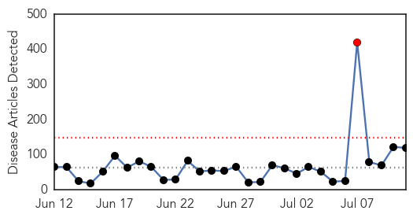

Unknown
30-Day Web Trend
1 alerts, 0 warnings

30-Day Twitter Trend
0 alerts, 0 warnings

Article Locations

Article Confidences

Top Articles:
- 0.999
- World Health Organization says spread of MERS virus isn't yet a worldwide health emergency
- 0.999
- Lebanon records its first case of potentially fatal Middle East respiratory virus
- 0.997
- Saudi MERS data review shows 50 pct jump in number of deaths
- 0.997
- WHO, experts raise questions about newly revealed Saudi MERS cases
- 0.997
- Asia should stay vigilant against MERS: WHO
- 0.996
- 2 Orlando hospital workers who had contact with MERS-infected man negative for virus
- 0.991
- MERS unlikely to spread in Asia: WHO expert
- 0.989
- Doctor exposed to Florida MERS case in Canada; he tests negative for virus
- 0.979
- Doctor exposed to MERS in Florida hospital remained healthy, left Canada
- 0.978
- Quebec confirms case of deadly pig virus; farm put under quarantine
- 0.976
- Florida health care workers test negative for MERS after exposure to 2nd confirmed US case
- 0.976
- Prince Edward Island government confirms first case of pig virus
- 0.965
- Federal panel says nasal spray should be first choice against flu for kids ages 2 to 8
- 0.960
- First case of deadly pig virus reported in Quebec
- 0.948
- Manitoba has first case of pig virus; no risk to humans, other animals
- 0.945
- Fifth case of deadly pig virus confirmed on Ontario farm as outbreak spreads
- 0.939
- Health officials confirm Texas death as 4th US case of mad cow-related disease
- 0.937
- Pig virus fears has P.E.I. pork producers on high alert
- 0.926
- Teenager Jessica Livings Says She Caught TB From Her Kitten
- 0.917
- Chicago Tribune
- 0.917
- Chicago Tribune
- 0.917
- Chicago Tribune
- 0.917
- Chicago Tribune
- 0.917
- Chicago Tribune
- 0.917
- Chicago Tribune
- 0.917
- Chicago Tribune
- 0.917
- Chicago Tribune
- 0.917
- Chicago Tribune
- 0.917
- Chicago Tribune
- 0.917
- Chicago Tribune
- 0.917
- Chicago Tribune
- 0.917
- Chicago Tribune
- 0.917
- Chicago Tribune
- 0.910
- The world windows to Thailand
- 0.887
- Tests confirm fourth case of deadly pig virus in Ontario
- 0.876
- Orlando Health says all workers exposed to MERS patient have been cleared to return to work
- 0.870
- Silent CMV virus a rare, dangerous risk for unborn; efforts mount to test and raise awareness
- 0.868
- Lab tests show norovirus to blame for outbreak on cruise ship that sickened nearly 700
- 0.866
- Kurdish peshmerga forces take over two Kirkuk oilfields
- 0.866
- Iraq's top Shi'ite cleric Sistani calls on fighters to respect all people's rights
- 0.866
- Several injured in explosion in western Turkish city
- 0.842
- Ninth encephalitis case confirmed
- 0.834
- Countries prepare to debate destroying last smallpox stocks; scientists urge delay
- 0.831
- Nova Scotia's final shipment of flu vaccine to address pharmacy shortages
- 0.828
- Premature Baby Dies At St Thomas' Hospital, 15 Others Infected, After NHS Drip 'Contaminated'
- 0.826
- 9-year-old girl dies from brain-eating amoeba after swimming in lake
- 0.823
- Deadly Pig Virus Confirmed In Canada
- 0.799
- Anthrax Scare Reveals More US Lab Safety Problems
- 0.797
- HIV found in baby once thought cured
- 0.794
- Deadly pig virus case confirmed in Ontario
Showing top 50 articles...
Top Tweets:
- 0.754
- Flu Fact Friday: Complications of flu can include bacterial pneumonia, ear infections, sinus infections and dehydration,
- 0.510
- Going on a cruise? Viruses like flu can spread easily on cruises. Tips for flu-free cruising: http://t.co/TYsc1I982O FluTravelTips
Dengue Fever
30-Day Web Trend
4 alerts, 5 warnings

30-Day Twitter Trend
4 alerts, 0 warnings

Article Locations

Article Confidences
Top Articles:
- 0.995
- Dengue Fever Vaccine May Soon Put an End to Painful Virus
- 0.980
- Illegals bring deadly threat
- 0.974
- Dengue Fever Vaccine Shows Some Promise in Trial
- 0.968
- Dengue threat around the corner as monsoon sets in
- 0.963
- Vaccine breakthrough gives hope to the millions of people at risk of and suffering from dengue fever
- 0.962
- Test vaccine for dengue seen as promising
- 0.950
- Dengue Fever Vaccination Shows Promise
- 0.906
- Third phase trial of dengue vaccine gives promising result
- 0.895
- Dengue Fever Vaccine is Promising in Early Trial
- 0.875
- First dengue vaccine hows promise
- 0.821
- Test vaccine for dengue promising
- 0.800
- Dengue on the rise Neglected areas are ideal places for Aedes to breed - Community
- 0.778
- Fewer dengue cases in Central Visayas for June-July
- 0.773
- Sarawak longhouse chiefs urged to join in anti-dengue fight
- 0.771
- Trial: Dengue shot offers some protection
- 0.769
- Malaysia General Business Sports and Lifestyle News
- 0.769
- Dengue Vaccine Offers Some Protection
- 0.762
- Moderate progress for dengue vaccine as number of cases passes 10,000 mark
- 0.738
- Iqtidar Gilani
- 0.737
- Steps for child, mother health
- 0.635
- Cost-effective solution for Govt - Nation
Top Tweets:
- 0.629
- Yes, a vaccine for dengue fever would have a huge positive effect. Currently, more than 1 mill. affected each year.